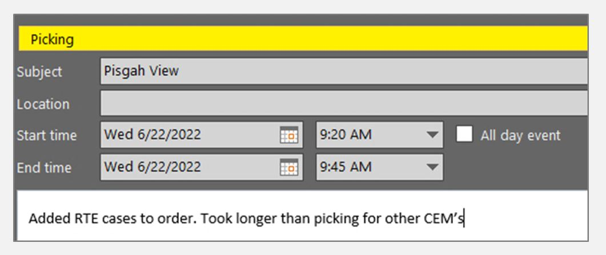
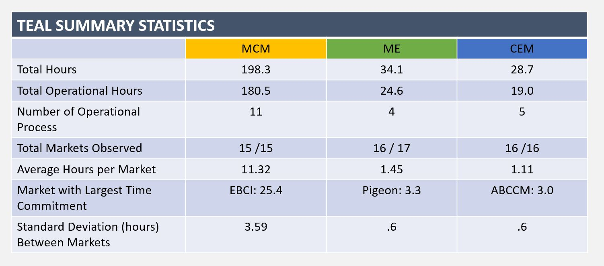
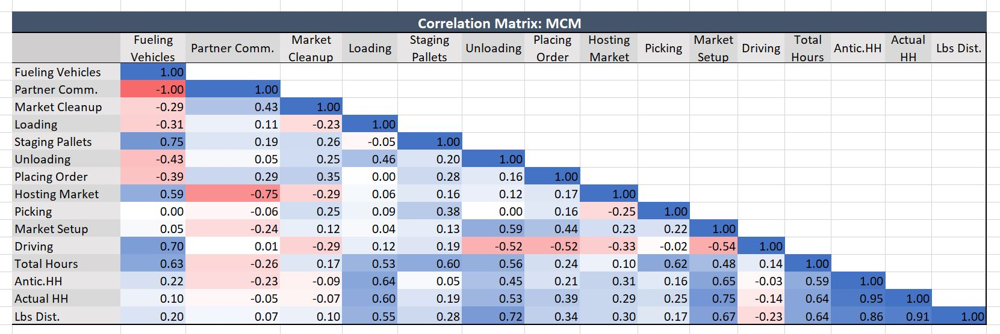

Time Study (TEAL)
Tools Used: Excel (pivot tables, pivot charts, VLOOKUP, IF statements, correlation matrix)
Scenario: My team was struggling to host and fulfill orders for our food distribution markets. Fatigue was high and morale was low. I had just completed a small time study for my own personal use and, seeing that initiative, my Director approached me to design and lead a time study for the whole team.
My goal was to identify areas for process improvement so that we could improve the sustainability of our work and increase our capacity for future work.
Action:I researched time study methodologies then worked with my team to design an approach that would work for our needs. We all recorded how long we spent on certain processes for one month. Once done, I compiled and analyzed our data. I then presented my findings and suggestions to my Manager, Director, and our Chief Operating Officer.
Technical Walkthrough
1. All team members used Outlook Calendars to record time spent on pre-defined processes. These "time blocks" were tagged with a market name, start time, end time, and even had room for comments.
2. At the end of each week I exported everyone's Outlook Calendar as a csv file, then compiled them in Excel. I met with each team member to review their time blocks to ensure our data was clean and that our methodology was being followed. We also reflected on the week so that I could better understand each person's workflow and collect qualitative feedback.
3. By the end of the study I collected and cleaned 820 time blocks representing over 537 hours of work. From here I began my exploratory analysis by grouping and summarizing this data with pivot tables and used their associated pivot charts for data visualization. I quickly identified that a certain type of market, "MCMs" were a prime candidate for process improvements. Compared to other market types, MCMs required substantially more time to facilitate, had the most complex workflow, and saw the most variation between market times. Based on feedback, they also caused the most stress for the team.
4. Having narrowed my focus on one particular market type, I still needed to identify which specific processes were good candidates for improvements. To maximize value I was looking for processes which the team spent a significant amount of time and energy on and were in our team's power to change.
I started by filtering by market type and grouping process times by individual markets. Then I used VLOOKUP to merge data into one target table which I used to create a correlation matrix. This helped identify correlation between processes and market details and identified potential drivers of total process times.
By combining the insight I gained through pivot tables, the correlation matrix, and qualitative feedback from my team, I was able to identify 4 processes which were fit for improvement: Loading, Staging Pallets, Placing Orders, and Picking.
5. Now it was time to present my findings. But I wanted to go a step further than just sharing my results: I wanted to propose some potential solutions to improve these processes. I spent an additional two weeks shadowing my team and discussing potential solutions before creating and sharing my findings with the project stakeholders.
Outcome: I successfully designed and implemented a time study, identified 4 areas for process improvement, and communicated my findings to stakeholders. I even went as far as to suggest some potential process improvements. The stakeholders were impressed and, within two months, I was acting as a team leader on a cross functional project to further refine and implement my proposed solutions.
By simplifying and removing entire processes we were able to save my department 55 hours of work per month. These changes also enabled us to rewrite the job description for two positions on my team, simplifying their roles and enabling them to support a new body of work for our department.
Reflection
The biggest challenge with this time study was its ambition. While the methodology and time collection technique proved sound, recording time for 25 separate process and 3 market types across 4 positions meant I had a lot of data to make sense of. When it came time to conduct an analysis I almost had too much data to work with. Perhaps working with stakeholders initially to try focus the scope of the project would have made the time collection period shorter and the dataset simpler to work with. Overall, there may always be trade off's on projects like these, but in this case I got the answers we were looking for and gained experience with new tools and techniques in the process.